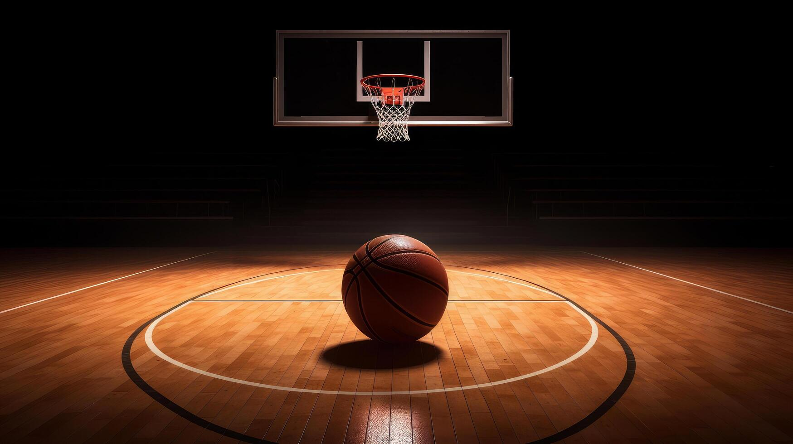

Basketball
El basketball es un deporte dinámico donde los jugadores deben encestar el balón en el aro del equipo contrario. Es conocido por su velocidad, habilidad y precisión.
Fútbol
El fútbol es el deporte más popular del mundo. En él, dos equipos compiten para anotar goles en la portería contraria usando principalmente los pies.

Volleyball
El volleyball es un deporte de equipo en el que los jugadores deben pasar la pelota por encima de una red sin que toque el suelo en su lado de la cancha.